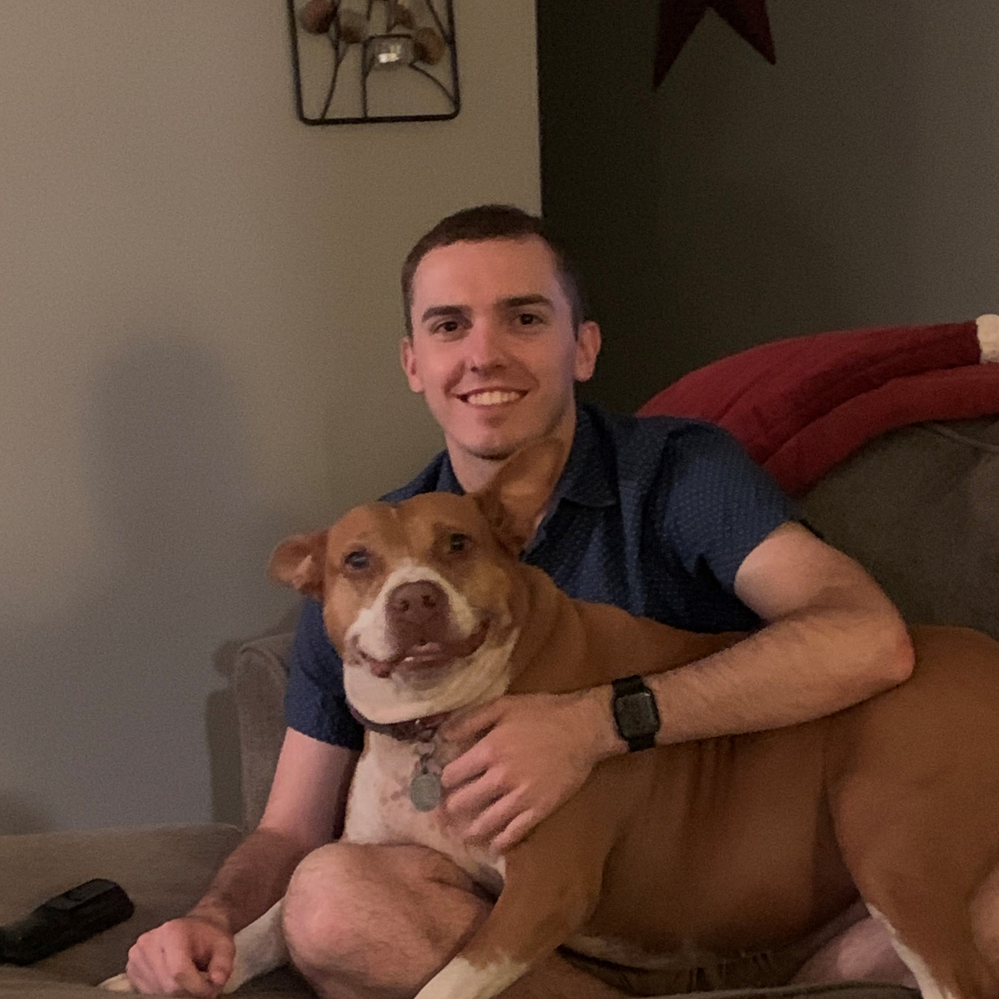

About Me
Personal Background: I was born November 5, 1998 in Beckely, WV, but raised primarily in Raeford, NC as my dad was active duty Air Force. Growing up, I played football, baseball, and soccer.
Professional Background: Parks and Recreation - Soccer Referee and Baseball Bookkeeper (4 years), Hoke County Schools - After-School Care Tutor (2 years), NCANG - EMT, Aeromedical Evacuation Technician (6 years and counting)
Academic Background: Straight out of high school I attended ECU for a year with an intention to major in biology and then head to medical school for orthopedic surgery, but after getting my taste of the medical field with the ANG and lots of discussions with numerous nurses and doctors, I decided to go the route of computer science. I am currently a senior thanks to all of my various transfer credits and should be wrapping up a degree in Computer Science with a concentration in Cyber Security by the end of the Summer 2025 term.
Primary Computer Platform: I primarily use my desktop that is running Windows for the majority of everything, but use my Macbook when in class.
Courses I am Taking, and Why:
Funny/Interesting Item to Remember Me By: I received a forearm to the nose playing soccer in the 7th Grade. When I went to my doctor to get it checked out he told me it was just a booger. My nose remains busted to this day, but you can't externally tell.
I Would Also Like to Share: I attended East Carolina University from 2017-2018, where I then joined the NC Air National Guard to obtain education benefits (because college is expensive) and still currently serve. I enjoy playing video games (Destiny, Age of Empires, Stardew Valley, etc.), outdoor activities such as kayaking and hiking, and spending time with friends and family.